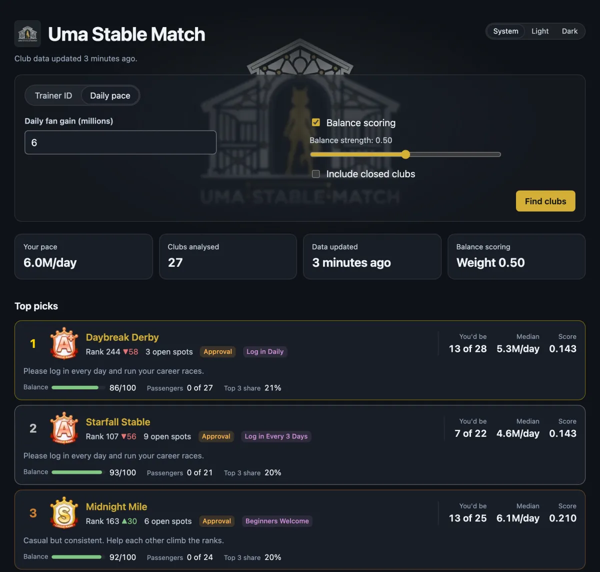
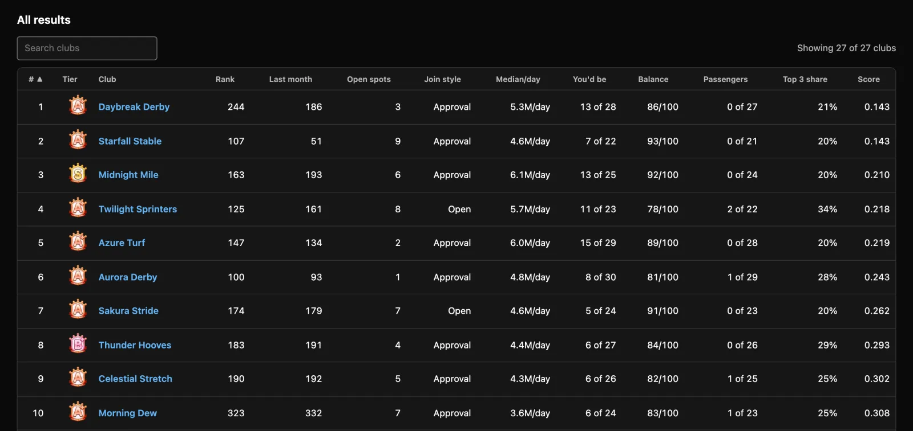

Your best-fitting clubs, ranked
Enter your trainer ID or daily fan gain and get your top picks, with each club's rank, open spots, join style and where you'd place among its members.

How the club matching works
Club leaderboards show how big a club is, not whether it's right for you. Uma Stable Match looks at the members.
Matched to your fan pace
Your daily fan gain is compared with each club's current members. The best matches are clubs where you'd sit around the middle: secure enough not to be cut, without carrying everyone else.
Members who pull their weight
Balance scoring looks at how evenly fans are spread across members and how many are passengers, so clubs where a few members carry everyone can rank lower.
Open, active clubs
Only clubs (circles) with an open spot are compared, unless you choose otherwise. Only current members count, so players who've left don't skew a club's numbers.
Everything you need to choose
Search and sort your 100 best fits, then open a club's uma.moe page and contact its leader.

- Your place
- 8 of 30 Where you'd rank among the club's current members.
- Median per day
- 5.3M/day The typical member's daily fan gain this month.
- Rank and tier
- Rank 163 ▲30 The club's monthly rank, its change since last month, and its tier from D to SS.
- Join style
- Open · Approval Join instantly, or wait for the leader to accept you. Closed clubs are only shown if you pick Closed.
- Balance
- 86/100 How evenly members contribute. Higher is better.
- Passengers
- 0 of 27 Members gaining under 1M fans a day, or under a quarter of the club's median.
Frequently asked questions
How do I find a good club in Umamusume?
Look for a club with an open spot whose members gain fans at about your pace, where you'd sit around the middle of the members and most members pull their weight. Uma Stable Match does this comparison for you across every club in its rank range and ranks the best fits.
Why isn't my club in the results?
Full clubs (30 of 30 members) aren't shown unless you tick Include full clubs, and never as top picks, since there's no spot to join. Your current club isn't in the results either, but searching by your trainer ID shows how it compares.
Why am I recommended a lower-tier club than mine?
A club's tier comes from its total fans, which its fastest members drive. Uma Stable Match matches your pace to a club's typical member instead, so you land in clubs where you'd sit around the middle. If you're well below a high-tier club's typical member, your best fits may be a tier or two lower.
Is Uma Stable Match official?
No. It's an unofficial, non-commercial fan tool, not affiliated with, endorsed by, or sponsored by uma.moe or Cygames, Inc.
Where does the club data come from?
From uma.moe's club and trainer data. Each club refreshes once a day, shortly after uma.moe's daily update.
Is it free?
Yes. Uma Stable Match is free and open source under the MIT license.
What do I need to use it?
Your trainer ID, the 9 to 12 digit number found in-game under Menu, then Profile, or your daily fan gain. There's nothing to install and no account to create.
Can I use it in my browser without installing anything?
Yes. Open the club finder at app.umastable.com on your phone or computer, and enter your trainer ID or daily fan gain.